القالب: master.docx
الناتج: خطة برامج النشاط الطلابي - مجمع أبو بكر الصديق التعليمي.docx
ناجح ✔ — التصميم لم يتغير
| ✔ | نفس أجزاء الحزمة وبنفس الترتيب | 28 جزءًا |
| ✔ | الأجزاء الثابتة متطابقة بايتًا ببايت (الصور، الأنماط، السمة، التذييل، الإعدادات، الخطوط) | 26 جزءًا متطابقًا |
| ✔ | لا يوجد أي تغيير في XML خارج مواضع البيانات الديناميكية | تغييرات نصية مسموحة: 295 — تصغير خط: 3 — مقاطع مضافة في خلايا فارغة: 288 |
| ✔ | عدد الأقسام | 7 |
| ✔ | حجم الصفحة واتجاهها | [{"w": "16840", "h": "11900", "orient": "landscape"}, {"w": "16840", "h": "11900", "orient": "landscape"}, {"w": "16840", "h": "11900", "... |
| ✔ | الهوامش | [{"top": "340", "right": "425", "bottom": "280", "left": "425", "header": "720", "footer": "720", "gutter": "0"}, {"top": "340", "right":... |
| ✔ | عدد الجداول | 45 |
| ✔ | عرض الأعمدة | [["2251", "2252", "2425", "2407", "2030", "2164", "2325"], ["2251", "2252", "2425", "2407", "2030", "2164", "2325"], ["569", "2142", "695... |
| ✔ | ارتفاع الصفوف | [["392", "382", "372"], ["392", "382", "372"], ["699", "958", "329", "564", "569", "578", "291", "569", "564", "281", "291"], ["392", "38... |
| ✔ | عرض الخلايا | [["4503", "11351", "13529", "2325", "2251", "2252", "2425", "2407", "2030", "2164", "2325"], ["4503", "11351", "13529", "2325", "2251", "... |
| ✔ | الخلايا المدمجة | 476 |
| ✔ | فواصل الصفحات | 4 |
| ✔ | الرسومات (DrawingML) | 48 |
| ✔ | مربعات النص | 48 |
| ✔ | أشكال VML | 46 |
| ✔ | الصور | {"word/media/image1.jpg": "c67f21cf1cba6cd2", "word/media/image2.png": "87514895cdf52a4e", "word/media/image3.png": "8471de3d029debf8", "... |
| ✔ | عدد الفقرات | 4418 |
| ✔ | الخطوط: لم يُضف أي خط جديد | Arial، Calibri، Calibri Light، Microsoft Sans Serif، Sakkal Majalla، Times New Roman، Verdana |
| ✔ | الألوان: لم يُضف أي لون جديد | 000000، 0B3945، 0F4C5C، 2A7F8E، 3C7A89، 4B6066، 6A8288، C00000، DCE7E8، EE0000، FFFFFF |
| ✔ | PDF: نفس عدد الصفحات | 26 ← 26 |
| ✔ | PDF: نفس مقاس كل صفحة | |
| ✔ | PDF: حدود الجداول والخلفيات والأشكال في نفس المواضع صفحةً صفحة | 7597 عنصرًا متجهًا متطابقًا |
| ✔ | PDF: الصور في نفس المواضع | |
| ✔ | PDF: لا تغيّر في البكسلات خارج مواضع النص | أعلى نسبة: 0.0% |
في كل صورة: القالب الأصلي ← الملف الناتج ← الاختلافات باللون الأحمر.
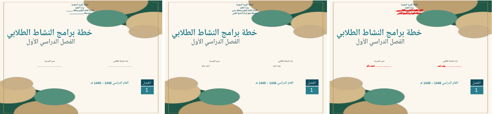
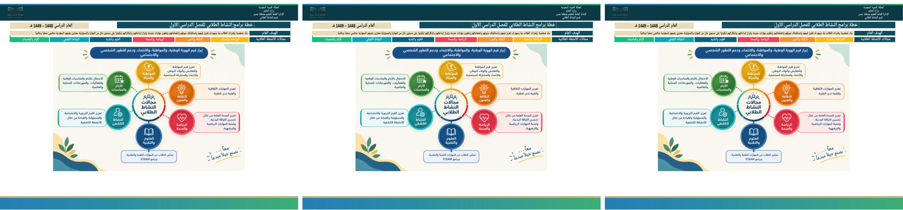
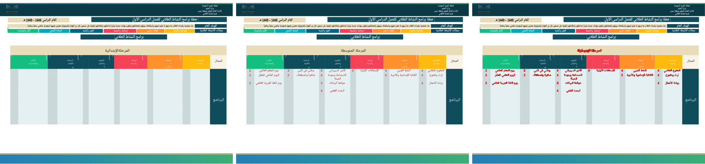
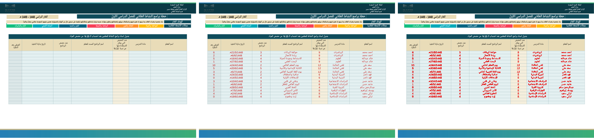
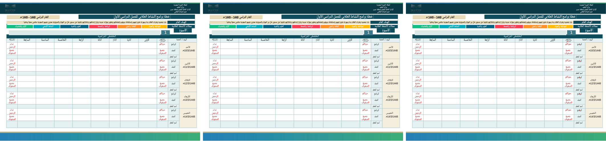
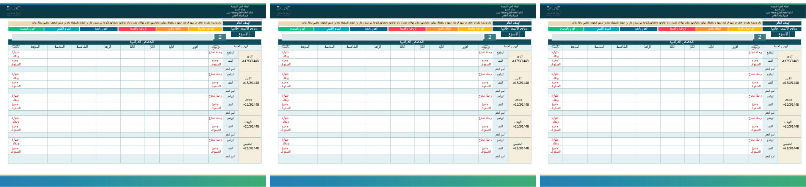
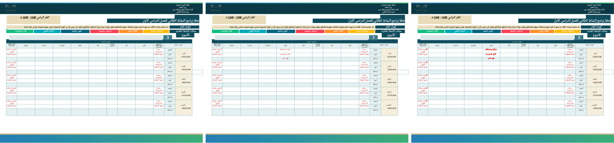
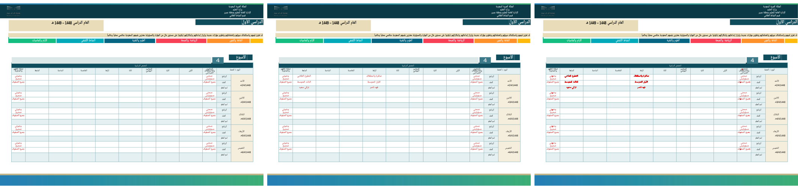
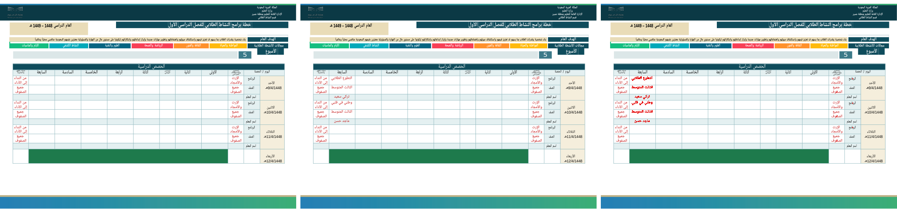
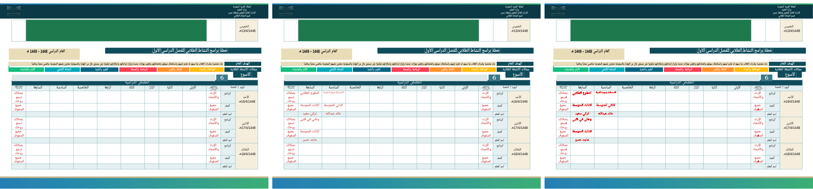
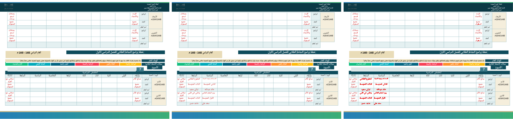
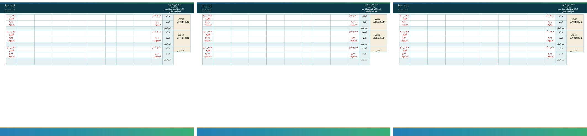
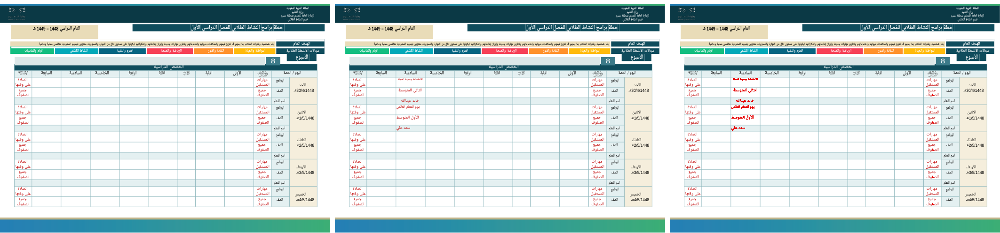
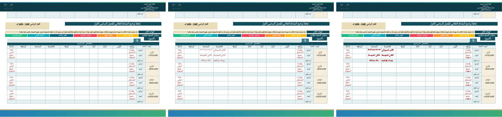
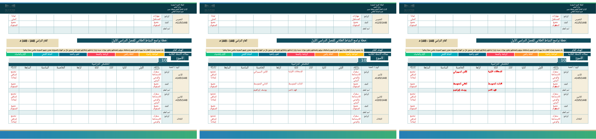
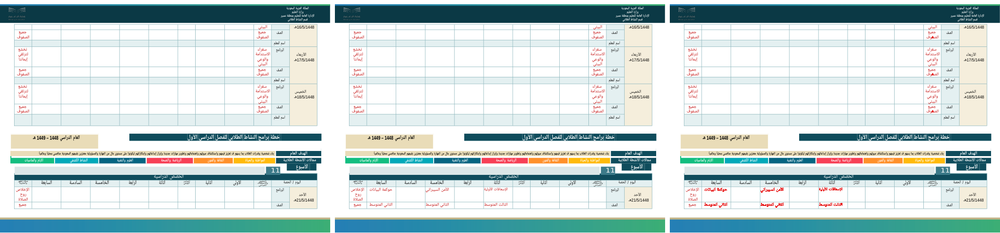
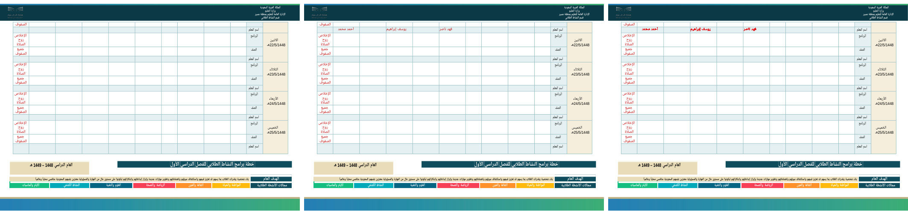
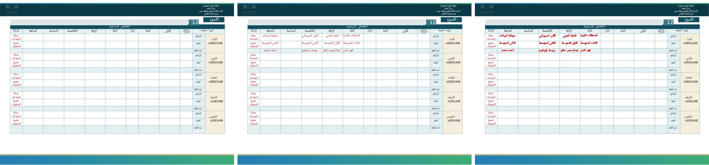
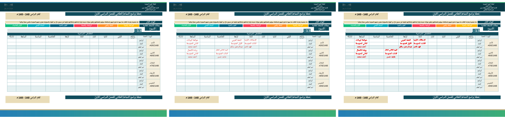
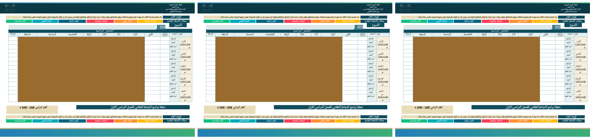
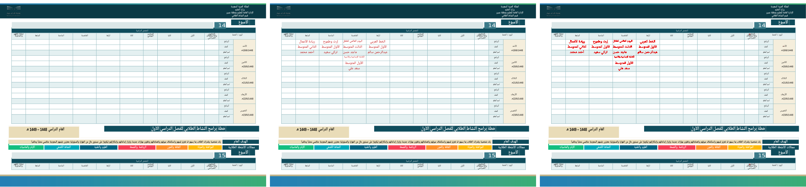
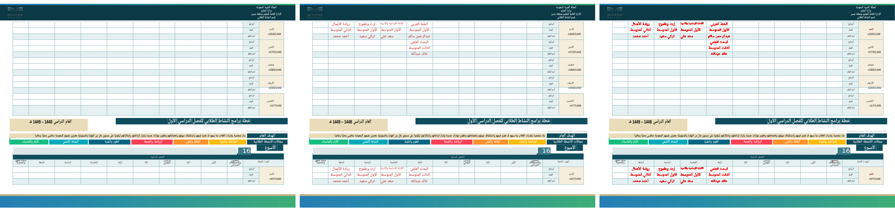
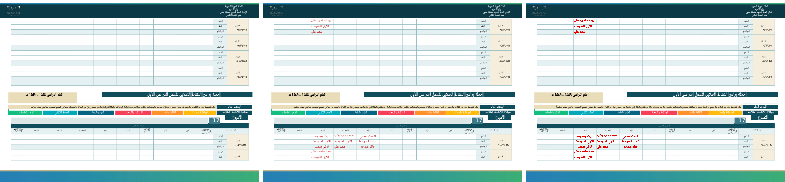
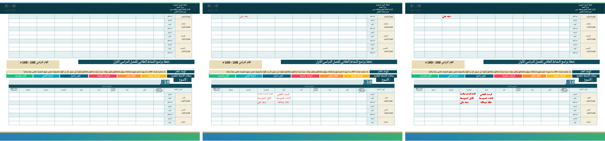
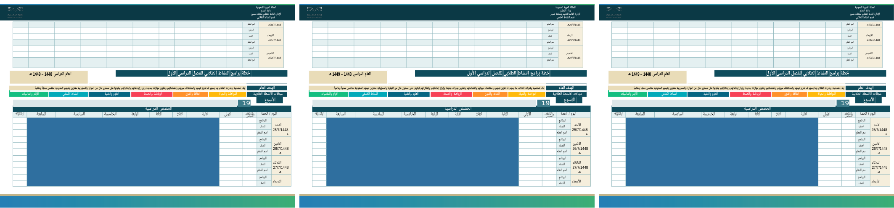
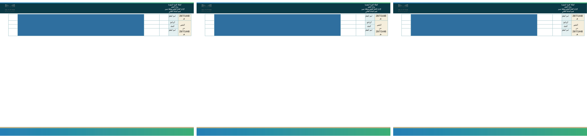